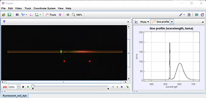

Tracker Experiment
This is the spectrum of a fluorescent red dye illuminated with a green solid-state laser. Red and green HeNe laser spots are included for calibration.
The camera records both reflected and emitted light from the dye.Analysis:
- Identify the solid-state laser line in the spectrum and confirm its wavelength.
- What is the shape of the fluorescence spectrum? Peak wavelength? Width at half-max?
- What is the peak brightness of the fluorescence peak relative to that of the laser?
- What is the total (integrated) intensity of the fluorescence peak relative to that of the laser?
- Why does the dye fluoresce at longer wavelengths than that of the laser? Would it fluoresce if illuminated with just the red HeNe laser?
- Theoretically, why is the fluorescence spectrum a broad band of wavelengths rather than a narrow line?
Author: Douglas Brown
Contact: dobrown@cabrillo.edu